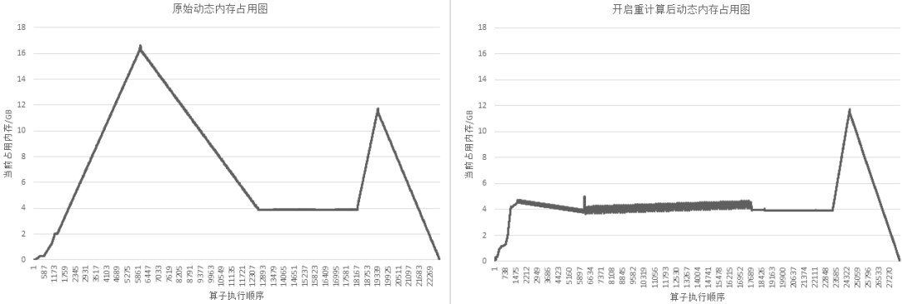

重计算¶

概述¶
MindSpore采用反向模式的自动微分，根据正向图计算流程来自动推导出反向图，正向图和反向图一起构成了完整的计算图。在计算某些反向算子时，需要用到一些正向算子的计算结果，导致这些正向算子的计算结果需要驻留在内存中，直到依赖它们的反向算子计算完，这些正向算子的计算结果占用的内存才会被复用。这一现象推高了训练的内存峰值，在大规模网络模型中尤为显著。
为了解决这个问题，MindSpore提供了重计算的功能，可以不保存正向算子的计算结果，让这些内存可以被复用，然后在计算反向算子时，如果需要正向的结果，再重新计算正向算子。此教程以模型ResNet-50为例，讲解MindSpore如何配置重计算功能去训练模型。
基本原理¶
MindSpore根据正向图计算流程来自动推导出反向图，正向图和反向图一起构成了完整的计算图。在计算某些反向算子时，可能需要用到某些正向算子的计算结果，导致这些正向算子的计算结果，需要驻留在内存中直到这些反向算子计算完，它们所占的内存才会被其他算子复用。而这些正向算子的计算结果，长时间驻留在内存中，会推高计算的内存占用峰值，在大规模网络模型中尤为显著。
为了降低内存峰值，重计算技术可以不保存正向激活层的计算结果，让该内存可以被复用，然后在计算反向部分时，重新计算出正向激活层的结果。MindSpore提供了重计算的能力。
重计算功能具体实现为根据用户指定的需要做重计算的正向算子，复制出一份相同的算子，输出到反向算子上，并删除原正向算子与反向算子间的连边关系。另外，我们需要保证复制出来的算子，在计算相应的反向部分时才开始被计算，所以需要插入控制依赖去保证算子执行顺序。如下图所示：

图：开启重计算功能前后的正反向示意图
为了方便用户使用，MindSpore目前不仅提供了针对单个算子设置的重计算接口，还提供针对Cell设置的重计算接口。当用户调用Cell的重计算接口时，这个Cell里面的所有正向算子都会被设置为重计算。
以GPT-3模型为例，设置策略为对每层layer对应的Cell设置为重计算，然后每层layer的输出算子设置为非重计算。72层GPT-3网络开启重计算的效果如下图所示：

图：开启重计算功能前后的GPT-3内存使用比较
操作实践¶
样例代码说明¶
准备模型代码。ResNet-50模型的代码可参见：https://gitee.com/mindspore/models/tree/r1.10/official/cv/resnet，其中，
train.py为训练的主函数所在，src/目录中包含ResNet-50模型的定义和配置信息等，script/目录中包含一些训练和推理脚本。准备数据集。本样例采用
CIFAR-10数据集，数据集的下载和加载方式可参考：https://www.mindspore.cn/tutorials/experts/zh-CN/r1.10/parallel/train_ascend.html#%E4%B8%8B%E8%BD%BD%E6%95%B0%E6%8D%AE%E9%9B%86。
配置重计算¶
我们可以通过调用两种接口去配置重计算，以src/resnet.py为例：
调用
Primitive的recompute接口，调用该接口之后，在计算反向部分时，该算子会被重新计算。class ResNet(nn.Cell): ... def __init__(self, block, layer_nums, in_channels, out_channels, strides, num_classes, use_se=False, res_base=False): super(ResNet, self).__init__() ... self.relu = ops.ReLU() self.relu.recompute() ...
调用
Cell的recompute接口，调用该接口之后，在计算反向部分时，除了该Cell的输出算子，Cell里面其他的所有算子以及子Cell里面的所有算子都会被重新计算。class ResNet(nn.Cell): def __init__(self, block, layer_nums, in_channels, out_channels, strides, num_classes, use_se=False, res_base=False): super(ResNet, self).__init__() ... self.layer1 = self._make_layer(block, layer_nums[0], in_channel=in_channels[0], out_channel=out_channels[0], stride=strides[0], use_se=self.use_se) def _make_layer(self, block, layer_num, in_channel, out_channel, stride, use_se=False, se_block=False): ... if se_block: for _ in range(1, layer_num - 1): resnet_block = block(out_channel, out_channel, stride=1, use_se=use_se) resnet_block.recompute() else: for _ in range(1, layer_num): resnet_block = block(out_channel, out_channel, stride=1, use_se=use_se) resnet_block.recompute() ... class ResidualBlock(nn.Cell): def __init__(self, in_channel, out_channel, stride=1, use_se=False, se_block=False): super(ResidualBlock, self).__init__() ... def construct(self, x): ... def resnet50(class_num=10): return ResNet(ResidualBlock, [3, 4, 6, 3], [64, 256, 512, 1024], [256, 512, 1024, 2048], [1, 2, 2, 2], class_num)
训练模型¶
以GPU环境为例，使用训练脚本scripts/run_standalone_train_gpu.sh。执行命令：bash scripts/run_standalone_train_gpu.sh $数据集路径 config/resnet50_cifar10_config.yaml。
通过在src/train.py中设置context：save_graph=True，可以打印出计算图结构进行对比。
设置重计算前：
...
%56(equivoutput) = Conv2D(%53, %55) {instance name: conv2d} primitive_attrs: {pad_list: (0, 0, 0, 0), stride: (1, 1, 1, 1), pad: (0, 0, 0, 0), pad_mode: 1, out_channel: 64, kernel_size: (1, 1), input_names: [x, w], format: NCHW, groups: 1, mode: 1, group: 1, dilation: (1, 1, 1, 1), output_names: [output]}
: (<Tensor[Float16], (32, 256, 56, 56)>, <Tensor[Float16], (64, 256, 1, 1)>) -> (<Tensor[Float16], (32, 64, 56, 56)>)
...
%61(equiv[CNode]707) = BatchNorm(%56, %57, %58, %59, %60) {instance name: bn_train} primitive_attrs: {epsilon: 0.000100, is_training: true, momentum: 0.100000, format: NCHW, output_names: [y, batch_mean, batch_variance, reserve_space_1, reserve_space_2], input_names: [x, scale, offset, mean, variance]}
: (<Tensor[Float16], (32, 64, 56, 56)>, <Tensor[Float32], (64)>, <Tensor[Float32], (64)>, <Tensor[Float32], (64)>, <Tensor[Float32], (64)>) -> (<Tuple[Tensor[Float16],Tensor[Float32]*4]>)
...
%927(out) = BatchNormGrad(%923, %56, %57, %924, %925, %926) primitive_attrs: {epsilon: 0.000100, format: NCHW, is_training: true} cnode_primal_attrs: {forward_node_name: BatchNorm_102499}
: (<Tensor[Float16], (32, 64, 56, 56)>, <Tensor[Float16], (32, 64, 56, 56)>, <Tensor[Float32], (64)>, <Tensor[Float32], (64)>, <Tensor[Float32], (64)>, <Tensor[Float32], (64)>) -> (<Tuple[Tensor[Float16],Tensor[Float32]*2]>)
...
设置重计算后：
...
%56(equivoutput) = Conv2D(%53, %55) {instance name: conv2d} primitive_attrs: {pad_list: (0, 0, 0, 0), stride: (1, 1, 1, 1), pad: (0, 0, 0, 0), pad_mode: 1, out_channel: 64, kernel_size: (1, 1), input_names: [x, w], format: NCHW, groups: 1, mode: 1, group: 1, dilation: (1, 1, 1, 1), output_names: [output]} cnode_attrs: {need_cse_after_recompute: true, recompute: true}
: (<Tensor[Float16], (32, 256, 56, 56)>, <Tensor[Float16], (64, 256, 1, 1)>) -> (<Tensor[Float16], (32, 64, 56, 56)>)
...
%61(equiv[CNode]707) = BatchNorm(%56, %57, %58, %59, %60) {instance name: bn_train} primitive_attrs: {epsilon: 0.000100, is_training: true, momentum: 0.100000, format: NCHW, output_names: [y, batch_mean, batch_variance, reserve_space_1, reserve_space_2], input_names: [x, scale, offset, mean, variance]}
: (<Tensor[Float16], (32, 64, 56, 56)>, <Tensor[Float32], (64)>, <Tensor[Float32], (64)>, <Tensor[Float32], (64)>, <Tensor[Float32], (64)>) -> (<Tuple[Tensor[Float16],Tensor[Float32]*4]>)
...
%1094([CNode]15682) = Conv2D(%1091, %1093) {instance name: conv2d} primitive_attrs: {pad_list: (1, 1, 1, 1), stride: (1, 1, 1, 1), pad: (0, 0, 0, 0), pad_mode: 1, out_channel: 64, kernel_size: (3, 3), input_names: [x, w], format: NCHW, groups: 1, mode: 1, group: 1, dilation: (1, 1, 1, 1), output_names: [output]} cnode_attrs: {need_cse_after_recompute: true, duplicated: true}
: (<Tensor[Float16], (32, 64, 56, 56)>, <Tensor[Float16], (64, 64, 3, 3)>) -> (<Tensor[Float16], (32, 64, 56, 56)>)
...
%1095([CNode]15681) = BatchNormGrad(%1085, %1094, %98, %1086, %1087, %1088) primitive_attrs: {epsilon: 0.000100, format: NCHW, is_training: true} cnode_attrs: {target_grad: true} cnode_primal_attrs: {forward_node_name: BatchNorm_102499}
: (<Tensor[Float16], (32, 64, 56, 56)>, <Tensor[Float16], (32, 64, 56, 56)>, <Tensor[Float32], (64)>, <Tensor[Float32], (64)>, <Tensor[Float32], (64)>, <Tensor[Float32], (64)>) -> (<Tuple[Tensor[Float16],Tensor[Float32]*2]>)
...
可见，Conv2D算子被复制出来了一份，作为反向算子BatchNormGrad的输入。